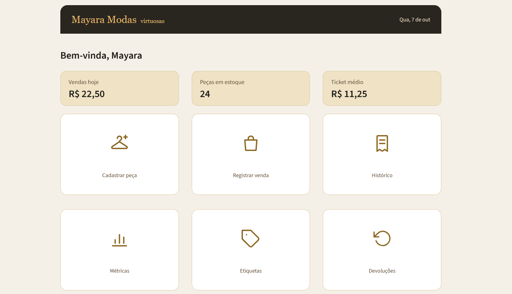
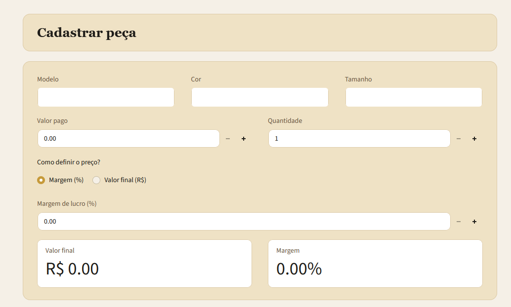
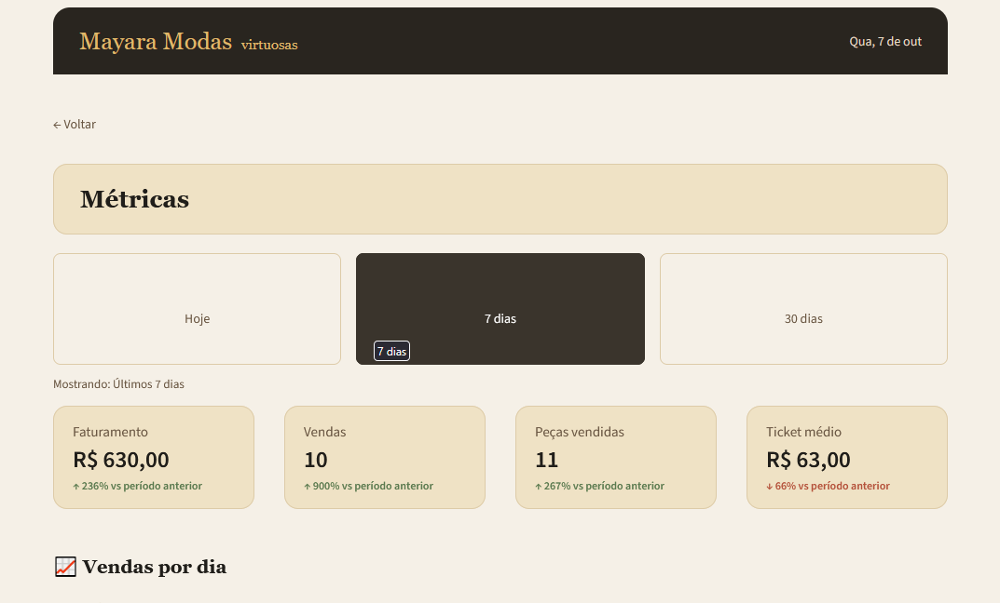

Automação de processos
Transformo tarefas repetitivas em fluxos automatizados usando Python.
Desenvolvo automações, tratamento de dados e sistemas sob medida para transformar processos manuais em soluções úteis.
Hoje meu principal foco é Python, enquanto avanço em back-end, dados e automação.
Transformo tarefas repetitivas em fluxos automatizados usando Python.
Organização, limpeza, transformação e análise de dados para processos reais.
Scripts, APIs e automações conectando ferramentas e reduzindo trabalho manual.
Aplicações pensadas para a rotina e as necessidades específicas de cada operação.
Um sistema desenvolvido sob medida para digitalizar a operação de uma loja que realizava seu controle manualmente, com caderno e calculadora.



Harvard University / CS50P
Ver certificadoFormação em andamento, com foco em análise e tratamento de dados.
Em progressoSe existe uma tarefa repetitiva ou uma operação que precisa virar sistema, vamos conversar.